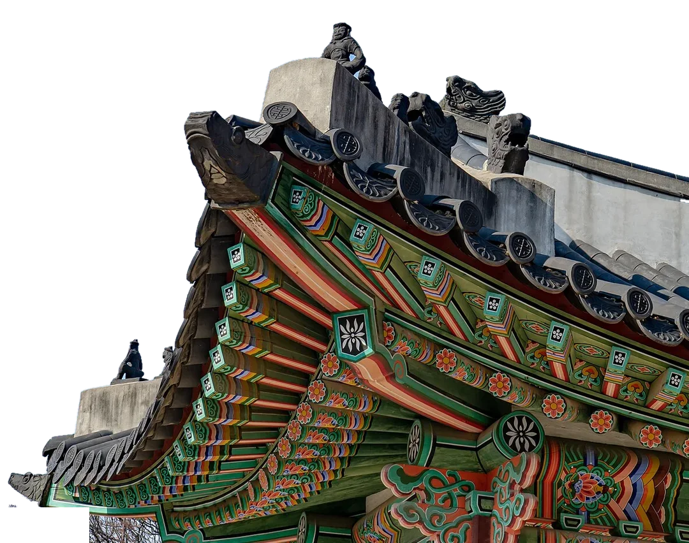
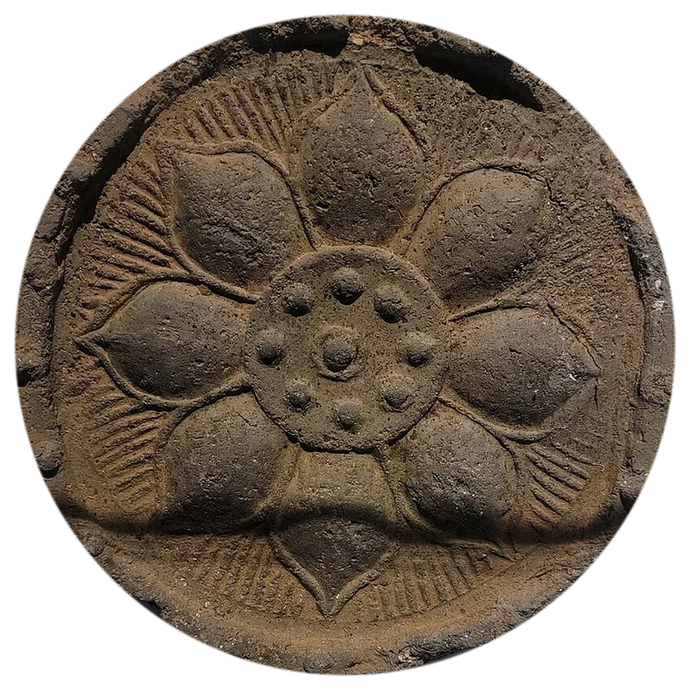

사진 속 선을 화면 끝까지 잇기
처마 사진의 추녀 끝에서 가는 먹선을 그어 화면 왼쪽 끝까지 이었습니다. 사진 속 건축선이 그래픽 선으로 넘어오면서 "처마 끝까지 빈틈없이"가 글이 아니라 화면 구조로 읽힙니다.
응용: 다리 난간, 학교 담장, 통학로 연석처럼 실물 사진의 선을 도식의 축·타임라인으로 이어 쓰기.
실험형 표지 · H 전통 공예·문양 · 2026. 10. 15. · 가상 예시


○○교육청 · 2027
2027 학교 재난안전 종합계획(안)
예방 · 대비 · 대응 · 복구 4단계로
안전망의 끝단을 막습니다
표지 하나를 위한 장식이 아니라, 다른 계획안 표지에도 옮겨 쓸 수 있는 방법만 골랐습니다.
처마 사진의 추녀 끝에서 가는 먹선을 그어 화면 왼쪽 끝까지 이었습니다. 사진 속 건축선이 그래픽 선으로 넘어오면서 "처마 끝까지 빈틈없이"가 글이 아니라 화면 구조로 읽힙니다.
응용: 다리 난간, 학교 담장, 통학로 연석처럼 실물 사진의 선을 도식의 축·타임라인으로 이어 쓰기.
처마 전체 사진에서 수막새 하나에 점을 찍고, 박물관 소장 수막새 실물을 흰 테 두른 원으로 크게 보여 줍니다. 전체 구조와 부분 디테일을 한 화면에서 함께 읽게 하는 도감식 장치입니다.
응용: 학교 배치도 + 교실 하나 확대, 조직도 + 담당자 하나 확대.
해태의 옛 이름 "獬豸(해치)"를 주홍 인면에 흰 글자로 새겨, 문서에 도장이 찍히는 자리에 둡니다. 화면의 유일한 강조색이 이 한 곳이라, 흙빛 수막새와 한지 사이에서 바로 눈에 들어옵니다.
응용: 상징 동물·꽃·문양을 기관 줄 옆 작은 인장으로. 본문 장표에서는 쪽 번호 옆 작은 인장으로 이어 쓰기.
수막새는 기와 줄의 끝을 막아 빗물과 바람이 스미지 않게 하는 기와이고, 해태는 옳고 그름을 가려 궁궐 문을 지키는 상상 속 동물입니다. 둘 다 "지킨다"는 일을 하므로 학교 재난안전 계획에 맞췄습니다.
| 계획안 구성 | 은유 | 이 표지 뒤 본문 장표 아이디어 |
|---|---|---|
| Ⅰ 추진 배경·현황 | 기왓장 한 장 한 장 = 학교 시설 하나하나. 소성 색이 조금씩 다른 것처럼 학교마다 노후도가 다름 | 핵심 수치: 30년 이상 노후 건물 비율, 최근 3년 학교 안전사고 건수(수치 타일 + 설명 카드) |
| Ⅱ 목표 및 지표 | 처마 끝까지 빈틈없이 = 사각지대 0 | 비교: 현재값 → 목표값(예: 안전점검 사각지대 37곳 → 0곳), 측정 방법 함께 적기 |
| Ⅲ 세부 추진과제 | 기왓골 = 위험이 모이는 경로, 막새 = 경로 끝을 막는 장치 | 현안→해결방안: 왼쪽에 위험이 모이는 곳(통학로·과학실·노후 전기설비), 오른쪽에 끝단 대책(보행로 분리, 약품 이력제, 전기 안전진단) |
| Ⅳ 추진체계 | 해태 = 점검하고 가리는 눈. 기관 인장 자리에 둔 것과 같은 뜻 | 조직·체계: 교육감 → 재난안전대책본부 → 시설·급식·체험학습 점검반 → 학교 안전책임관 |
| Ⅴ 일정 및 예산 | 기와는 처마 끝 줄부터 깔고 위로 올라감 = 가장 취약한 끝단부터 먼저 | 일정: 1분기 취약 학교 우선 정비 → 2~3분기 확대 → 4분기 전수 점검(간트 + 마일스톤) |
본문은 평면 요소에 H 계열 값을 입혀 이어 갑니다(한지 바탕, 먹 글자, 흙빛 농담 다섯 단계, 주홍은 한 곳). 움직임은 이 표지 한 장만 씁니다.
빌린 대표 장치와, 실물에서 확인해 넣은 관찰 디테일입니다.
.hy-text 안의 문장만 바꾸면 됩니다. 색과 글꼴은 맨 위 .hy-cover의 --hy-* 변수에서 바꿉니다..hy-eave(처마)와 .hy-zoom(확대 원)의 left·top·width, 처마 끝선은 SVG의 .eline 경로에서 바꿉니다. 사진을 바꾸면 바닥 줄 출처도 함께 바꾸세요.<meta charset="utf-8">
<link rel="preconnect" href="https://fonts.googleapis.com">
<link rel="preconnect" href="https://fonts.gstatic.com" crossorigin>
<link rel="stylesheet" href="https://fonts.googleapis.com/css2?family=Nanum+Myeongjo:wght@700;800&family=Noto+Sans+KR:wght@400;500;700&display=swap">
<style>
/* ── 처마 끝 수막새 표지 (접두어 hy-) ── 16:9, 가상 화면 1600×900, 1cqw = 16px
경복궁 처마 사진(하늘만 걷어 냄) + 수막새 확대 원 + 처마 끝에서 이어지는 먹선 */
.hy-cover{
--hy-paper:#F4F3EE; --hy-paper2:#E9E6DC; --hy-ink:#1F252C; --hy-sub:#5D646C; --hy-line:#8C9294;
--hy-seal:#C2412B;
--hy-font-title:"Nanum Myeongjo","나눔명조","Batang","바탕",serif;
--hy-font-body:"Noto Sans KR","Pretendard","Malgun Gothic","맑은 고딕",sans-serif;
container-type:inline-size; width:100%; color:var(--hy-ink); font-family:var(--hy-font-body);
}
.hy-stage{position:relative; width:100%; aspect-ratio:16/9; overflow:hidden; background:var(--hy-paper)}
.hy-stage::before{content:""; position:absolute; inset:0; background:radial-gradient(70% 60% at 78% 20%, #FBFAF6 0%, transparent 70%), linear-gradient(180deg, transparent 70%, var(--hy-paper2) 100%)}
.hy-eave{position:absolute; left:34cqw; top:0; width:67.5cqw; height:auto; max-width:none; display:block; filter:drop-shadow(0 1.4cqw 1.6cqw rgba(40,36,30,.18)); -webkit-mask-image:linear-gradient(180deg,#000 80%,transparent 97%); mask-image:linear-gradient(180deg,#000 80%,transparent 97%)}
.hy-art{position:absolute; inset:0; width:100%; height:100%; overflow:visible; pointer-events:none}
.hy-art .lead{fill:none; stroke:var(--hy-line); stroke-width:1.2}
.hy-art .dot{fill:var(--hy-paper); stroke:var(--hy-ink); stroke-width:1.2}
.hy-art .eline{fill:none; stroke:var(--hy-ink); stroke-width:2.2; stroke-linecap:round}
.hy-zoom{position:absolute; left:40.6cqw; top:15cqw; width:11cqw; height:11cqw; border-radius:50%; background:var(--hy-paper);
box-shadow:0 0 0 .45cqw #fff, 0 1cqw 2cqw rgba(40,36,30,.35); display:grid; place-items:center}
.hy-zoom img{width:94%; height:94%; display:block}
.hy-lab{position:absolute; font-size:1cqw; line-height:1.4; color:var(--hy-sub); white-space:nowrap}
.hy-lab b{display:block; color:var(--hy-ink); font-size:1.1cqw; letter-spacing:.04em}
.hy-lab.l1{left:52cqw; top:2.6cqw; text-align:right; transform:translateX(-100%)}
.hy-lab.l2{left:40.6cqw; top:27cqw; white-space:normal; width:11.5cqw}
.hy-lab.l3{left:5cqw; top:42cqw}
/* 글 구역 */
.hy-text{position:absolute; left:5cqw; top:0; width:30cqw; height:100%}
.hy-eyebrow{position:absolute; top:6.5cqw; left:0; margin:0; font-family:var(--hy-font-title); font-weight:700; font-size:1.25cqw; letter-spacing:.42em; color:var(--hy-sub)}
.hy-title{position:absolute; top:10.2cqw; left:0; margin:0; font-family:var(--hy-font-title); font-weight:800; font-size:5.8cqw; line-height:1.16; letter-spacing:-.035em}
.hy-rule{position:absolute; top:27.6cqw; left:0; width:4.5cqw; border-top:.14cqw solid var(--hy-ink)}
.hy-plan{position:absolute; top:29.2cqw; left:0; margin:0; font-size:1.85cqw; font-weight:700; letter-spacing:-.01em; white-space:nowrap}
.hy-lede{position:absolute; top:32.6cqw; left:0; margin:0; width:29cqw; font-size:1.15cqw; line-height:1.6; color:var(--hy-sub); word-break:keep-all}
.hy-sign{position:absolute; left:0; bottom:3cqw; display:flex; align-items:center; gap:1.3cqw}
.hy-seal{width:5.4cqw; height:5.4cqw; flex:none; background:var(--hy-seal); color:#FBF6EE; border-radius:.3cqw; display:flex; flex-direction:column; align-items:center; justify-content:center; gap:.1cqw;
box-shadow:inset 0 0 0 .16cqw #FBF6EE, inset 0 0 0 .36cqw var(--hy-seal); font-family:var(--hy-font-title); font-weight:800; font-size:1.8cqw; line-height:1}
.hy-org{font-size:1.2cqw; line-height:1.5; font-weight:500}
.hy-org span{display:block; color:var(--hy-sub); font-weight:400; font-size:1cqw; letter-spacing:.12em}
.hy-credit{position:absolute; right:1.6cqw; bottom:.8cqw; font-size:.72cqw; color:var(--hy-sub); text-align:right; text-shadow:0 0 .4cqw var(--hy-paper)}
/* 한 번만: 처마가 내려앉고 → 처마 끝선이 화면 왼쪽 끝까지 이어지고 → 수막새 확대 */
.hy-cover.is-play .hy-eave{animation:hyIn 1.1s cubic-bezier(.16,1,.3,1) both}
.hy-cover.is-play .eline{animation:hyDraw 1.3s .7s cubic-bezier(.45,0,.2,1) both}
.hy-cover.is-play .hy-zoom{animation:hyPop .7s 1.6s cubic-bezier(.16,1,.3,1) both}
.hy-cover.is-play .hy-lab,.hy-cover.is-play .lead,.hy-cover.is-play .dot{animation:hyFade .5s 1.9s ease-out both}
@keyframes hyIn{from{opacity:0; transform:translateY(-2.4cqw)}to{opacity:1; transform:none}}
@keyframes hyDraw{from{stroke-dashoffset:1}to{stroke-dashoffset:0}}
@keyframes hyPop{from{opacity:0; transform:scale(.85)}to{opacity:1; transform:none}}
@keyframes hyFade{from{opacity:0}to{opacity:1}}
@media (prefers-reduced-motion:reduce){.hy-cover.is-play *{animation:none!important}}
</style>
<div class="hy-cover" id="hyCover" aria-label="표지: 처마 끝까지 빈틈없이 — ○○교육청 2027 학교 재난안전 종합계획(안)">
<div class="hy-stage">
<img class="hy-eave" src="../src/58/assets/54faff5e59.webp" alt="경복궁 전각의 처마: 기와 줄 끝의 수막새, 지붕 위 잡상, 단청" decoding="async">
<svg class="hy-art" viewBox="0 0 1600 900" preserveAspectRatio="none" aria-hidden="true">
<!-- 처마 끝선: 사진 속 추녀 끝에서 화면 왼쪽 끝까지 이어진다 -->
<path class="eline" pathLength="1" stroke-dasharray="1" d="M566,758 C470,744 300,732 80,730"/>
<!-- 지시선 -->
<path class="lead" d="M842,66 L1068,66"/><circle class="dot" cx="1072" cy="66" r="5"/>
<path class="lead" d="M834,330 C1050,330 1250,350 1366,384"/><circle class="dot" cx="1372" cy="384" r="5"/>
</svg>
<div class="hy-zoom"><img src="../src/58/assets/4bbaa1be11.webp" alt="연꽃무늬 수막새 확대(고려, 국립중앙박물관 소장)"></div>
<div class="hy-lab l1"><b>잡상</b>지붕 위에 앉아 재앙을 막는 수호상</div>
<div class="hy-lab l2"><b>수막새</b>기와 줄 끝을 하나도 빠짐없이 막는 연꽃무늬 막새</div>
<div class="hy-lab l3"><b>처마 끝선</b>교실에서 통학로까지 한 줄로</div>
<div class="hy-text">
<p class="hy-eyebrow">○○교육청 · 2027</p>
<h1 class="hy-title">처마 끝까지<br>빈틈없이</h1>
<div class="hy-rule"></div>
<p class="hy-plan">2027 학교 재난안전 종합계획(안)</p>
<p class="hy-lede">예방 · 대비 · 대응 · 복구 4단계로<br>안전망의 끝단을 막습니다</p>
<div class="hy-sign">
<div class="hy-seal" role="img" aria-label="해태 인장"><span>獬</span><span>豸</span></div>
<div class="hy-org">○○교육청 안전총괄과<span>2027. 1.</span></div>
</div>
</div>
<div class="hy-credit">가상 예시 · 사진: 경복궁 처마 ⓒ Nina R, CC BY 2.0(하늘 제거) · 연꽃무늬 수막새 ⓒ 고려, CC BY 4.0 (Wikimedia Commons)</div>
</div>
</div>
<script>
/* 처마 끝 수막새 표지 — 처마가 내려앉고, 처마 끝선이 왼쪽 끝까지 이어진 뒤 수막새를 확대해 보여 준다(약 2.4초, 한 번). 끝 화면이 기본 상태다. */
(function(){
var c=document.getElementById('hyCover'); if(!c) return;
function play(){ c.classList.remove('is-play'); void c.offsetWidth; c.classList.add('is-play'); }
var img=c.querySelector('.hy-eave');
if(img.complete) play(); else img.addEventListener('load', play, {once:true});
window.hyCover={replay:play};
})();
</script>